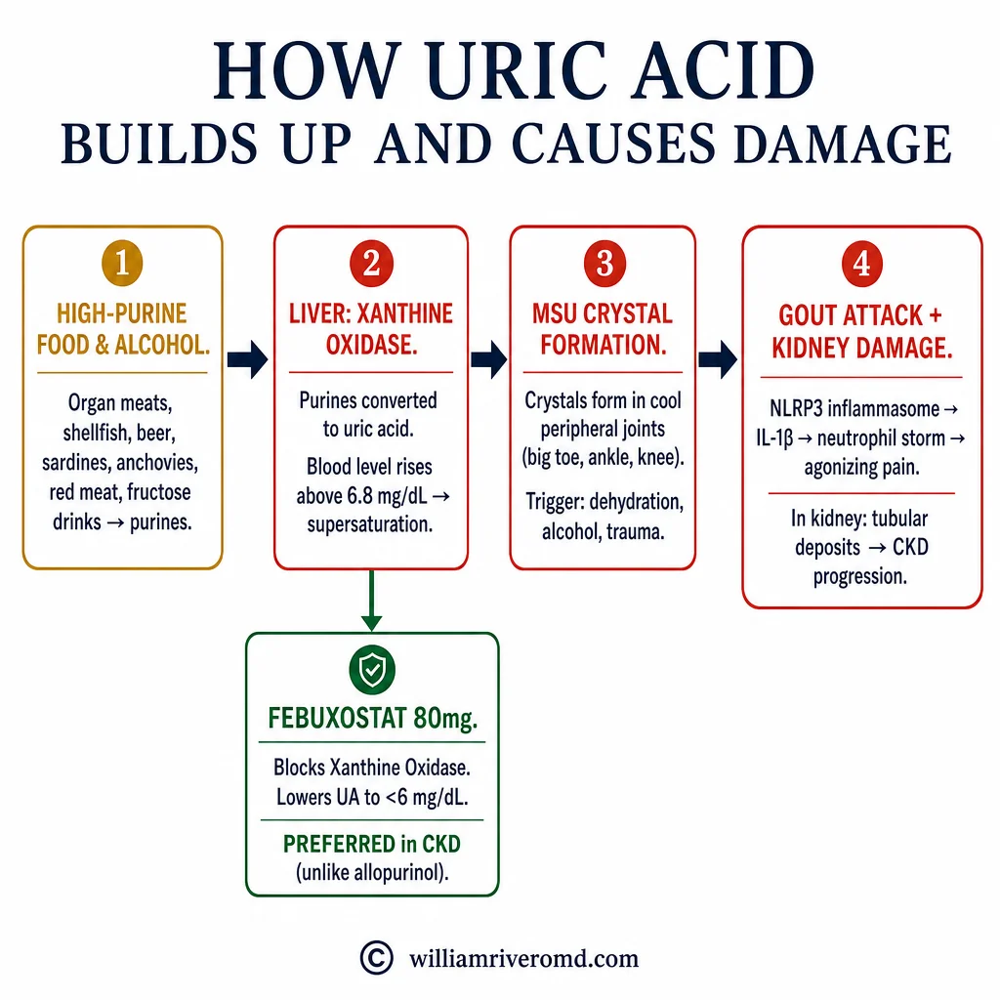
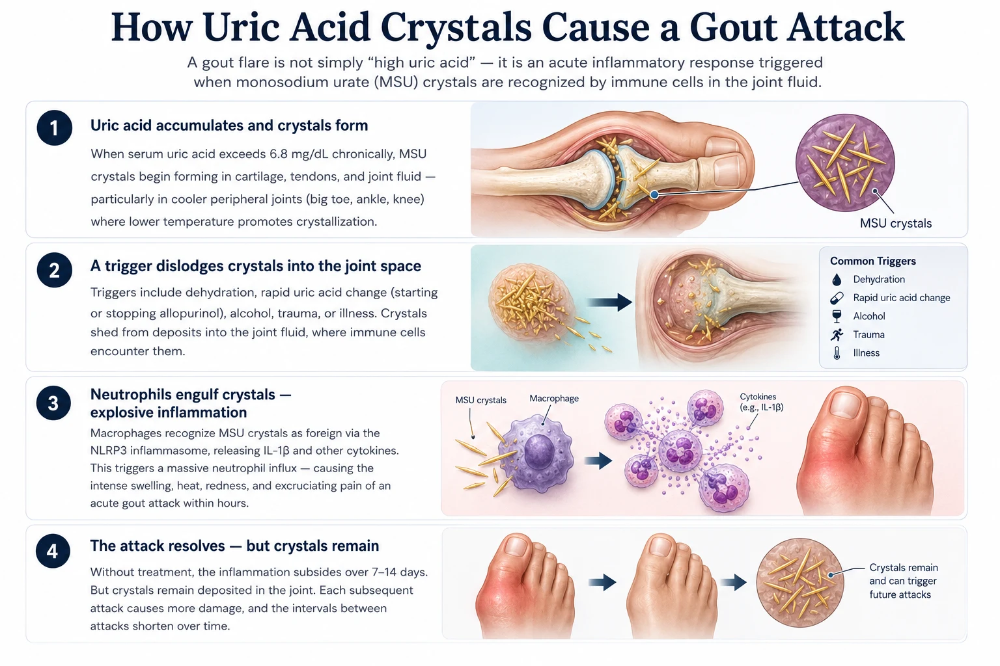
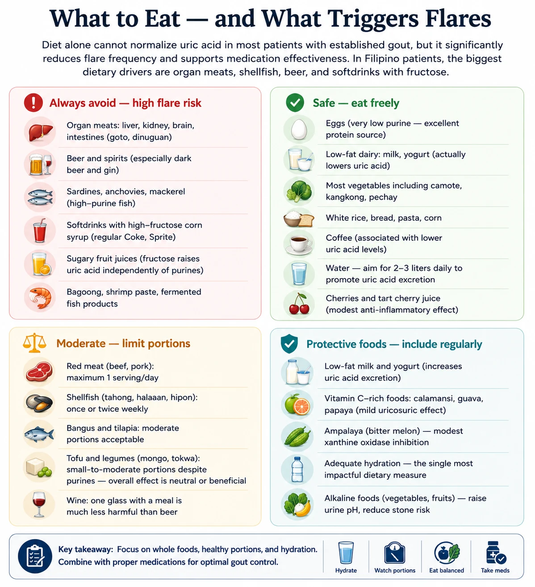
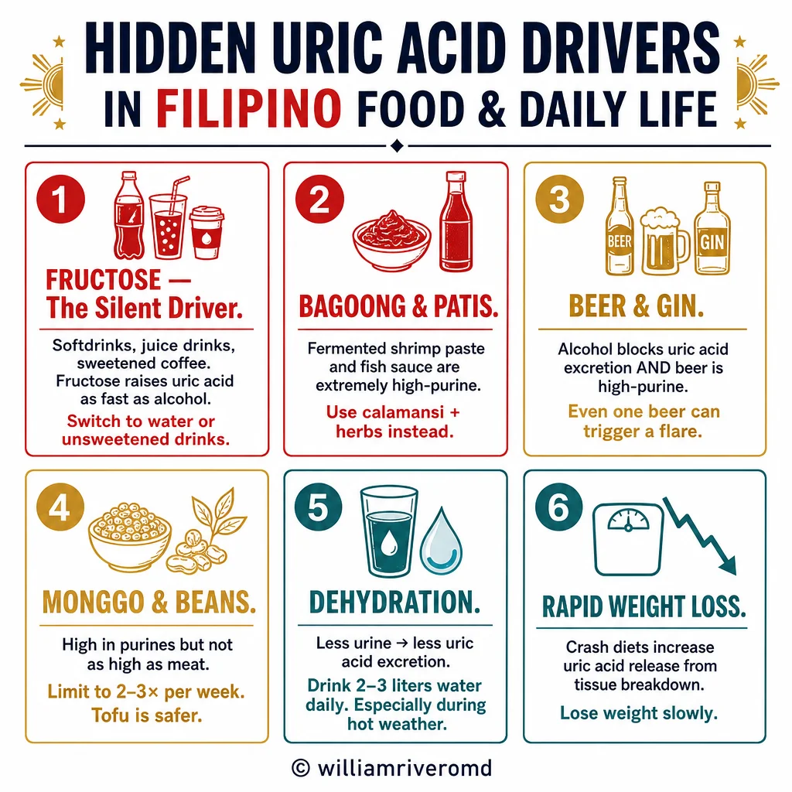
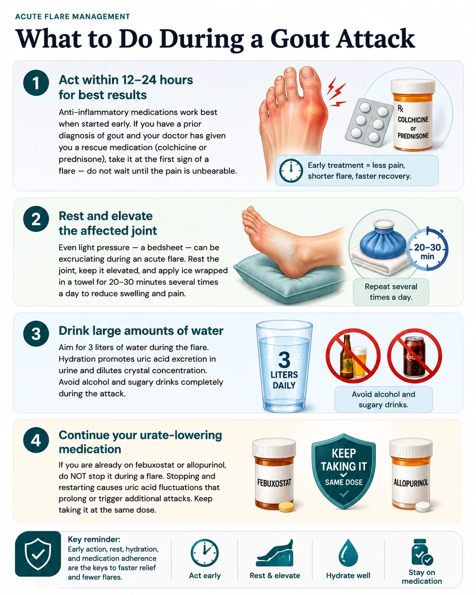
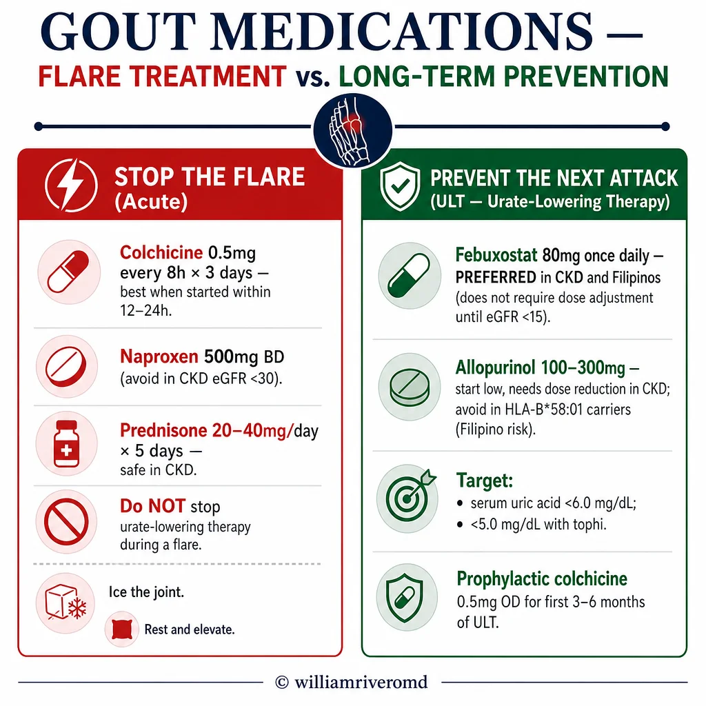
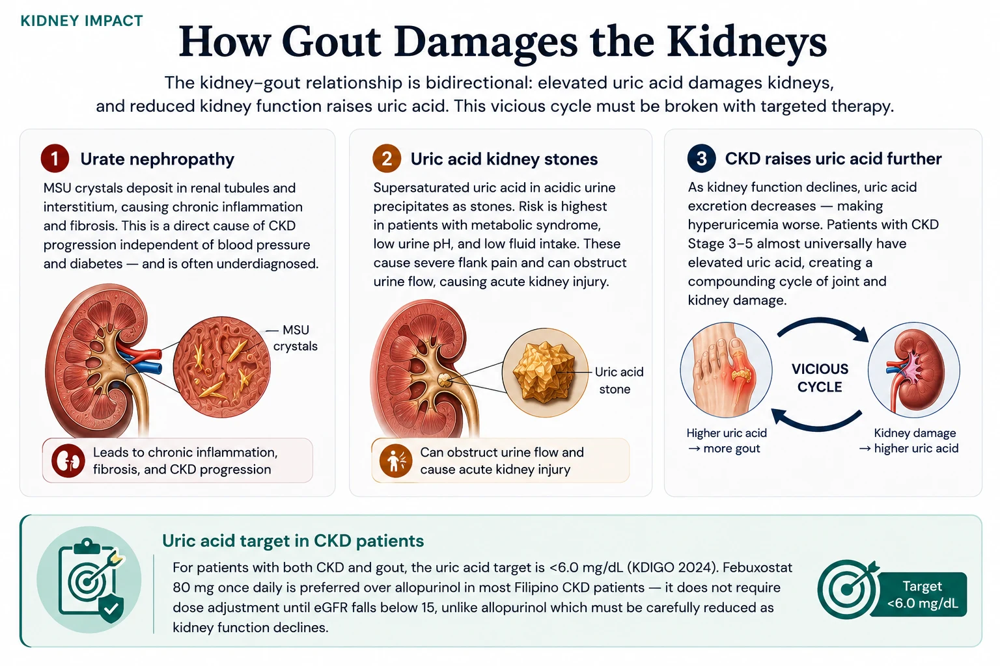

| Gout & Uric Acid Guide · Nephrology & Internal Medicine | W.G.M. Rivero MD · FPCP · DPSN · PRC 0101184 · williamriveromd.com · 2026 |
|
Patient Education · Gout & CKD
Gout & Uric Acid
in Kidney Disease Acute flares, diet, medications, and the gout–CKD cycle. Practical guidance for Filipino patients with gout, hyperuricemia, or chronic kidney disease. Covers allopurinol use in CKD, low-purine Filipino foods, flare management, and long-term uric acid targets.
|
🦶
W.G.M. Rivero MD
FPCP · DPSN Nephrologist
williamriveromd.com
|
<6.0 mg/dL Uric Acid Target (on treatment) |
↑ Risk CKD Progression with high UA |
Allopurinol Primary ULT Treatment |
Diet Modifies Uric Acid Risk |
Uric acid is the final breakdown product of purines — nitrogen-containing compounds found in many foods and naturally produced by the body during cell turnover. Purines are converted to uric acid by the enzyme xanthine oxidase. In healthy kidneys, about 70% of uric acid is excreted in urine. In CKD, impaired renal excretion causes serum uric acid to accumulate — a condition called hyperuricemia (serum UA >7 mg/dL in men, >6 mg/dL in women).
When uric acid concentration exceeds its solubility threshold (~6.8 mg/dL), it crystallizes as monosodium urate (MSU) crystals that deposit in joints, soft tissues, and renal tubules — causing acute gout attacks, tophi, and urate nephropathy. Uric acid targets: men <6 mg/dL on treatment; women <5 mg/dL; tophaceous gout <5 mg/dL.
🔥 Acute Gout Flare
Sudden-onset, excruciating joint pain — often nocturnal
Classic site: First metatarsophalangeal joint (big toe) — podagra. Also ankle, knee, wrist, elbow.
Features: severe pain (often 10/10), warmth, erythema, swelling, exquisite tenderness — cannot tolerate a bedsheet touching the joint.
Duration: Untreated: 7–14 days. Treated early: 3–5 days.
Triggers: dehydration, alcohol (especially beer), organ meats, diuretics, contrast dye, illness, surgery.
UA target on treatment: <6 mg/dL (<5 mg/dL if tophi)
|
💎 Chronic Tophaceous Gout
Years of uncontrolled hyperuricemia → crystal accumulation in tissues
Tophi: visible chalky MSU crystal deposits — ear helix, olecranon bursa, finger joints, Achilles tendon.
Joint destruction: chronic synovitis → erosive arthropathy → deformity and disability. X-ray: "punched-out" erosions with overhanging edges.
Kidney damage: urate nephropathy, uric acid kidney stones, interstitial nephritis → CKD progression.
Prevention: persistent ULT to keep UA <6 mg/dL — tophi dissolve slowly over 1–3 years on adequate therapy.
Note: Tophi are NOT an emergency unless they rupture (infection risk) or compress a nerve
|
| For educational use only. This guide does not replace individualized medical advice. References: ACR Gout Guidelines 2020 · EULAR Gout 2016 · KDIGO CKD 2024 · Neogi et al., ACR 2015 classification criteria. | williamriveromd.com Page 1 of 8 · williamriveromd.com/guides/gout-uric-acid |
| Gout & Uric Acid Guide · Nephrology & Internal Medicine | W.G.M. Rivero MD · FPCP · DPSN · williamriveromd.com · 2026 |

| For educational use only · Not a substitute for individualized medical advice · williamriveromd.com | williamriveromd.com Page 2 |
| Gout & Uric Acid Guide · Nephrology & Internal Medicine | W.G.M. Rivero MD · FPCP · DPSN · williamriveromd.com · 2026 |

| For educational use only · Not a substitute for individualized medical advice · williamriveromd.com | williamriveromd.com Page 3 |
Filipino Foods — Purine & Uric Acid Content Heat-map reference · Values approximate per 100g raw or per standard serving · FNRI Philippine tables + international purine databases |
Page 4 of 8 · williamriveromd.com |
| Food (Filipino / common name) | Purines (mg/100g) | Notes for Gout & CKD Patients |
|---|---|---|
| 🔴 VERY HIGH PURINES (>200 mg/100g) — Avoid completely during flare; severely limit at all times | ||
| Dilis — dried anchovies | 600 mg | Extremely concentrated purines in dried form. A small handful delivers a massive uric acid load. Avoid entirely in gout. |
| Sardinas sa mantika — canned sardines in oil | 480 mg | Very high purines from fish flesh and canning liquid. Avoid during flares; limit to once per week at most otherwise. |
| Atay ng baboy / manok — pork / chicken liver | 444 mg | Highest purine load of any common Filipino food. Avoid completely — even 50g significantly raises serum UA. |
| Bato — kidney (pork / beef) | 325 mg | Organ meat — extremely high purines. Avoid completely. Common in goto, pares, and some kare-kare preparations. |
| Utak — brain (pork) | 250 mg | Very high purines. Avoid completely. Used in some sisig and kare-kare recipes. |
| Pusit — squid | 200 mg | High purines. Avoid during flares. Limit to small portions (≤50g) on non-flare days, infrequently. |
| Chicken / beef broth cubes (Knorr, Maggi) | Very high | Highly concentrated meat extracts — among the highest purine sources per gram. Use pandan or tanglad (lemongrass) for flavor instead. |
| 🟡 MODERATE PURINES (50–200 mg/100g) — Limit to 1 serving per day; avoid entirely during active flare | ||
| Manok — chicken breast/thigh (100g) | 175 mg | Moderate purines. One palm-sized piece (100g) per day is acceptable. Avoid skin. Boiled or grilled is preferred over fried. |
| Alimango / alimasag — crab (100g) | 152 mg | Moderate-high. Limit to ≤50g during non-flare periods. Avoid entirely during flares. |
| Hipon — shrimp (100g) | 150 mg | Limit to small portions (50g) occasionally. Higher purine than freshwater fish. |
| Baboy — pork (100g lean) | 150 mg | Limit to 1 serving/day. Avoid fatty cuts (liempo). Isaw (intestine) = organ = very high purines — avoid. |
| Baka — beef (100g lean) | 120 mg | 1 serving/day acceptable. Avoid beef broth (concentrated purines). Avoid bulalo (bone marrow). |
| Bangus — milkfish (100g) | 90 mg | Lower than many fish. One of the best fish choices for gout patients in the Philippines. 1 serving/day acceptable. |
| Tilapia (100g) | 80 mg | Reasonable purine level. 1 piece/day acceptable. Grilled or steamed preferred. |
| Kabute — mushroom (1 cup) | 60 mg | Plant purines — less readily absorbed than animal purines. Limit to 1 cup/day; avoid during active flare. |
| Monggo — mung beans (½ cup cooked) | 50 mg | Plant purines have minimal UA effect. Do NOT eliminate monggo for gout — large studies show legumes do not significantly raise serum UA. Excellent fiber and protein source. |
| Kangkong (1 cup cooked) | 40 mg | Very low actual risk despite being a moderate purine food. Eating kangkong does not significantly raise serum UA — safe daily vegetable. |
| Beer — 1 bottle (330 mL) | ★ Multiple | Single most potent gout trigger: raises UA via (1) guanosine content, (2) ethanol → accelerated purine breakdown, (3) lactic acid → impaired renal UA excretion. AVOID completely in gout. |
| 🟢 LOW PURINES — Safe choices; eat freely (in appropriate portions for other dietary restrictions) | ||
| Itlog — eggs (chicken or duck) | <1 mg | Essentially zero purines. Excellent protein source for gout patients. No restriction needed. |
| Gatas — low-fat milk, yogurt | <5 mg | Low-fat dairy may actively lower serum uric acid by promoting renal UA excretion. 1–2 glasses/day beneficial (check phosphorus in CKD). |
| Kanin / bigas — white rice | <5 mg | Lowest purine of any staple. Safe for gout. Preferred over brown rice in CKD 4–5 (lower phosphorus). |
| Kamote, cassava, saging saba (as starch) | <10 mg | Low purine starchy foods — safe for gout. Saba banana: check potassium if fluid-restricted. |
| Most fruits (pakwan, papaya, mangga, pinya) | <15 mg | Safe. Exception: avoid sweetened fruit juices and sodas — fructose raises serum UA independently of purines. |
| Tofu — white / silken | Moderate plant | Despite moderate plant purines, tofu does NOT raise serum UA in clinical studies — may be mildly protective. Safe to eat daily. |
| Kape — coffee (1–2 cups/day) | — | Coffee (regular or decaf) lowers serum uric acid and reduces gout risk in epidemiological studies. 1–2 cups/day may be beneficial. |
| Seresa — cherries (½ cup daily) | <5 mg | Cherry consumption associated with 35% lower gout flare risk. Anthocyanins inhibit xanthine oxidase and have anti-inflammatory effects. |
| Choi et al., NEJM 2004 · Zhang et al., Ann Rheum Dis 2012 · FNRI Philippine Food Composition Tables 2023 · ACR Gout Guidelines 2020 · Educational use only. | williamriveromd.com · Page 4 of 8 |
| Gout & Uric Acid Guide · Nephrology & Internal Medicine | W.G.M. Rivero MD · FPCP · DPSN · williamriveromd.com · 2026 |

| For educational use only · Not a substitute for individualized medical advice · williamriveromd.com | williamriveromd.com Page 5 |
| Gout & Uric Acid Guide · Nephrology & Internal Medicine | W.G.M. Rivero MD · FPCP · DPSN · williamriveromd.com · 2026 |

| For educational use only · Not a substitute for individualized medical advice · williamriveromd.com | williamriveromd.com Page 6 |
Acute Gout Flare · Management · When to Seek Help Step-by-step actions during a flare · Red flags requiring ER · Medication safety in CKD |
Page 7 of 8 · williamriveromd.com |
Do NOT take NSAIDs (mefenamic acid, ibuprofen, diclofenac, naproxen) if your eGFR is <30 mL/min/1.73m² — they acutely constrict the afferent arteriole and can cause a sudden, potentially irreversible drop in kidney function (NSAID-induced AKI). Use colchicine with dose reduction instead (≤0.5 mg/day if eGFR <30). Corticosteroids (prednisolone) are the preferred alternative when both NSAIDs and colchicine are contraindicated. Always ask your nephrologist before taking any pain medication during a flare.
| Emergency Red Flag | Reason |
|---|---|
| Fever >38.5°C WITH joint swelling | May be septic arthritis (joint infection) — a surgical emergency. Requires joint aspiration to distinguish from gout. Delay risks joint destruction. |
| Tophi breaking through the skin | Open wound with urate crystal exposure → high infection risk → sepsis. Requires urgent wound care and antibiotics. |
| Multiple joints simultaneously swollen | Polyarticular gout or alternative diagnosis (RA, reactive arthritis, bacterial). Needs urgent evaluation and joint aspiration. |
| Severe pain uncontrolled by prescribed medications | IV colchicine or IV corticosteroids may be required. Do not exceed prescribed colchicine dose — toxicity is dangerous in CKD. |
✅ Flare Duration GuideUntreated flare: 7–14 days to resolution |
⚠ Colchicine Dose Reduction in CKDeGFR >60: Standard: 1 mg then 0.5 mg after 1 hr (acute) |
| Khanna et al., ACR Gout Guidelines 2020 · Richette et al., EULAR 2016 · Neogi T., NEJM 2011 · Stamp et al., Drug Saf 2011 · Educational use only. | williamriveromd.com · Page 7 of 8 |
| Gout & Uric Acid Guide · Nephrology & Internal Medicine | W.G.M. Rivero MD · FPCP · DPSN · williamriveromd.com · 2026 |

| For educational use only · Not a substitute for individualized medical advice · williamriveromd.com | williamriveromd.com Page 7b |
Medications · Kidney Protection · Long-Term Management Urate-lowering therapies · Anti-inflammatory agents · How gout damages kidneys · Long-term goals |
Page 8 of 8 · williamriveromd.com |
| Medication | Dose | Use | Key Notes for CKD Patients |
|---|---|---|---|
| Allopurinol | 50–300 mg/day | Long-term ULT (first-line) | Start at 50 mg/day in CKD — titrate by 50 mg every 2–4 weeks to target UA <6 mg/dL. Metabolized to oxypurinol, which accumulates in CKD. STOP immediately if any rash develops — risk of severe DRESS syndrome (drug reaction with eosinophilia and systemic symptoms), which can be fatal. HLA-B*58:01 screening recommended in Filipino and Han Chinese patients before starting (higher DRESS risk). |
| Febuxostat | 40–80 mg/day | Long-term ULT (second-line) | Alternative for allopurinol-intolerant patients. No dose adjustment needed for mild–moderate CKD. Caution in cardiovascular disease — CARES trial showed possible increased CV mortality vs allopurinol. Avoid in unstable angina or recent MI. More expensive than allopurinol in the Philippines. |
| Colchicine | 0.5–1 mg/day (prophylaxis); 1 mg acute | Flare prevention & acute treatment | Reduce dose in CKD (see Page 7). Risk of neuromuscular toxicity with accumulation in CKD. Never combine with clarithromycin or strong CYP3A4 inhibitors. Continue prophylactic colchicine for 3–6 months after starting ULT to prevent mobilization flares. |
| NSAIDs (mefenamic acid, ibuprofen, diclofenac) | Short course (3–5 days) | Acute flare (if eGFR >30) | Nephrotoxic — AVOID in CKD stages 4–5 (eGFR <30). Even 3 days can precipitate AKI requiring dialysis in advanced CKD. Avoid in patients on ACEi/ARB + diuretic combination (triple whammy = high AKI risk). |
| Prednisolone | 20–40 mg/day × 3–5 days | Acute flare (when NSAIDs & colchicine contraindicated) | Preferred when NSAIDs are contraindicated (eGFR <30) and colchicine is not tolerated. Short course generally safe. Monitor blood sugar — can precipitate hyperglycemia in diabetics. Exclude active infection before use. |

|
🫘 How Gout Damages the Kidneys
Urate NephropathyMSU crystal deposits in renal interstitium and tubules → tubular obstruction → chronic interstitial nephritis → progressive CKD. Occurs with persistently elevated serum UA even between gout attacks. Effective ULT (allopurinol) slows or stabilizes CKD progression in several studies. Uric Acid Kidney StonesSupersaturation in acidic urine (common in gout + metabolic syndrome) → uric acid nephrolithiasis. Radiolucent on plain X-ray. Treatment: urinary alkalinization with potassium citrate (target urine pH 6.0–6.5) + hydration 2–2.5 L/day + allopurinol if recurrent. Cardiovascular RiskHyperuricemia associated with hypertension (inhibits NO production → vasoconstriction), endothelial dysfunction, and CKD progression. Treating gout reduces overall inflammatory burden and cardiovascular risk. |
 Fig. 7 — Mechanisms by which chronic hyperuricemia and gout damage kidney tissue, accelerate CKD progression, and increase cardiovascular risk. MSU crystal deposition in tubules causes obstructive nephropathy; uric acid stones cause obstructive AKI; endothelial inflammation drives hypertension and glomerular injury.
|
| References: ACR Gout Guidelines (Khanna et al.) 2020 · EULAR Gout Recommendations (Richette et al.) 2016 · KDIGO CKD Guidelines 2024 · Choi HK NEJM 2004 · Stamp LK Drug Saf 2011 · For educational use only. Does not replace individualized medical advice from your physician. | williamriveromd.com Page 8 of 8 · williamriveromd.com/guides/gout-uric-acid |